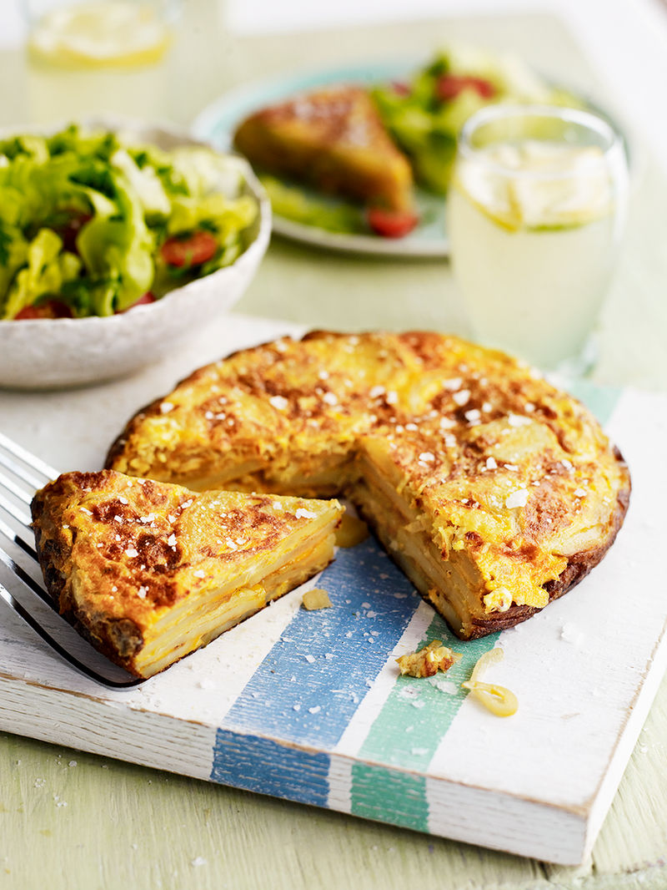

Spanish Tortilla

“This classic Spanish dish is very versatile and quick to whip up. The tortilla (or Spanish omelette) can be served hot or cold and is a fantastic way of using up all kinds of ingredients – simply add in any leftover vegetables, crumbled or grated cheese, jarred red peppers or cooked sausage. They’ll all taste great, so get experimenting! ”
Ingredients
- 300 g waxy potatoes
- 1 onion
- olive oil
- 5 large free-range eggs
Method
- Peel the potatoes using a speed-peeler, then carefully cut them into thin slices. Pat the potato slices dry with a clean tea towel.
Peel and finely slice the onion. Drizzle
- tablespoons of oil into a small frying pan over a medium heat, then add the onion and potatoes.
-
- Turn the heat down to low and cook for 25 to 30 minutes, or until the onions are turning golden and the potato slices are cooked through. Try not to stir it too much or the potatoes will break up – just use a fish slice to flip them over halfway through.
Crack the eggs into a mixing bowl, season with a tiny pinch of sea salt and black pepper, then whisk together with a fork.
When the onions and potatoes are cooked, remove the pan from the heat and carefully tip them into the eggs. Transfer the mixture back into the frying pan and place it over a low heat. Cook for around 20 minutes, or until there’s almost no runny egg on top.
- Use a fish slice to slightly lift and loosen the sides of the tortilla. Carefully flip the pan over a dinner plate and tip out the tortilla, then slide it back into the pan and cook for another 5 minutes, or until golden and cooked through.
Turn out the tortilla onto a serving board, then cut into
6 wedges and serve hot or cold with a simple green salad.